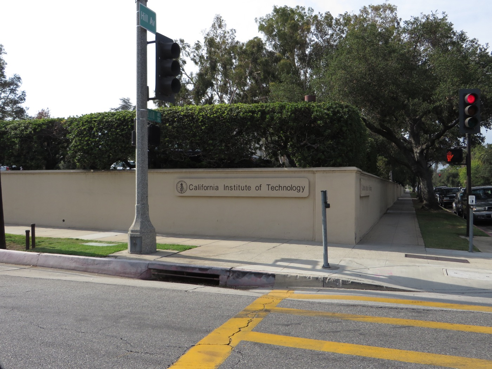

Executive Summary
2026년 9월 8일, 오픈AI가 3차원 비압축성 나비에-스토크스 방정식에서 유한시간 특이점이 생긴다는 증명을 발표했다. 사흘 뒤인 9월 11일, 필즈상 수상자 25명이 「수학에서 AI의 심각한 오정렬(A Severe Misalignment of AI in Mathematics)」이라는 선언에 서명했다. 이 글은 그 선언이 무엇에 반대했고 무엇에는 반대하지 않았는지, 그리고 이 사건에서 끝까지 확인되지 않은 채 남은 것이 무엇인지를 본다.
널리 퍼진 읽기 하나는 사실이 아니다. 오픈AI가 증명을 감춘 채 결과만 발표했다는 것이다. 발표 당일 166쪽짜리 나비에-스토크스 원고와 57쪽짜리 오일러 원고, 그리고 Lean 4 형식화 저장소가 함께 나왔다. 누구나 내려받아 빌드할 수 있고, 기계가 증명서를 다시 검사한다. 선언 어디에도 그 증명이 틀렸다는 말은 없다. 선언이 문제 삼은 것은 "서둘러 발표된 해법은 제대로 된 작성과, 새 방법의 추출과, 남의 선행 연구를 인용할 시간을 남기지 않는다"는 쪽이다.
4절까지는 공개된 원고와 저장소, 오픈AI의 9월 8일 발표문, 선언 전문, 당사자들이 직접 낸 성명에 적힌 것만 따라간다. 5절에서 우리 쪽 데이터 실무로 옮겨 적는 부분은 그 문서들에 없는 이 글의 해석이다.
주요 수치
출처: 에이전트·시간·토큰 수치는 오픈AI 9월 8일 발표문에 적힌 값, 서명자는 mathandai.org
88시간
에이전트 약 1만 개가 결과를 낸 시간
9월 1일 착수, 9월 5일 도출. Lean 형식화·검증에 17시간이 더 들었다
1,300억 개
나비에-스토크스 작업에 쓴 출력 토큰
메시지 270만 건. 관련 시도까지 합치면 약 3,000억 개
25명
선언에 서명한 필즈상 수상자
1978년 들리뉴부터 2026년 덩위까지. 선언은 어느 회사도 이름을 대지 않는다
100만 달러
오픈AI가 청구하지 않겠다고 밝힌 상금
강제항을 허용하는 (C)·(D) 항을 세웠다고 스스로 적었다
선언이 나오기까지의 한 달
이 이야기는 오픈AI에서 시작하지 않는다. 뉴욕대 쿠랑연구소의 트리스탄 버크마스터와 앤트로픽 소속 수학자 레벤트 알퇴그는 지난 1년 가까이 개인 협업으로 유체 방정식의 유한시간 폭발(blow-up)을 좇고 있었다. 버크마스터가 직접 낸 성명에 따르면 8월 15일에 매끄러운 강제항이 있는 부시네스크 방정식과 3차원 오일러 방정식에서 폭발 결과를 얻었고, 8월 22일에 Lean으로 검증을 마쳤다. 그는 두 사람이 쓴 도구도 성명에 적어 두었다. 앤트로픽의 클로드와 오픈AI의 코덱스였다.
9월 3일, 앤트로픽이 큰 문제를 풀었다는 소문이 돌자 버크마스터는 오픈AI의 한 수학자에게 메일을 썼다. 이것은 기관의 사업이 아니라 순전히 개인 협업이며, 결과와 형식화를 함께 곧 공개하겠다는 내용이었다. 9월 6일 일요일 오후에 두 차례 통화가 있었고, 세바스티앙 뷰벡이 들어왔다. 그 자리에서 버크마스터는 오픈AI 내부 모델이 강제항 나비에-스토크스의 폭발 증명을 냈다는 말을 들었다. 9월 8일에는 양쪽이 나란히 결과를 냈다. 협정세계시로 이른 새벽에 알퇴그·버크마스터가 논문 세 편과 Lean 저장소, 그리고 무슨 일이 있었는지를 적은 성명을 올렸고, 그날 저녁 오픈AI가 원고와 형식화를 공개했다.
| 날짜 | 일어난 일 |
|---|---|
| 8월 15일 | 알퇴그·버크마스터, 강제항이 있는 부시네스크·오일러 폭발 결과를 얻음 |
| 8월 22일 | 같은 결과의 Lean 검증 완료 |
| 8월 28일 | 오픈AI, 새 내부 모델 훈련 시작. 발표 시점까지 훈련이 계속되고 있었다고 적었다 |
| 9월 1일 | 밀레니엄 문제 두 건이 풀렸다는 소문을 듣고, 미해결 밀레니엄 문제 전체에 에이전트를 투입 |
| 9월 3일 | 버크마스터, 오픈AI 소속 수학자에게 개인 연구임을 알리는 메일을 보냄 |
| 9월 5일 | 오픈AI 에이전트들이 결과 도출. 첫 투입에서 88시간째 |
| 9월 6일 | 뷰벡이 낀 두 차례 통화. 저자 구성을 둘러싼 두 가지 제안이 나옴. 오픈AI는 이날 Lean 검증까지 마치고 두 사람에게 연락했다고 적었다 |
| 9월 7일 | 테렌스 타오가 자기 블로그에 알퇴그·버크마스터 연구를 소개 |
| 9월 8일 | 알퇴그·버크마스터가 논문 세 편과 성명 공개. 같은 날 오픈AI가 원고와 Lean 형식화 공개 |
| 9월 10일 | 오픈AI, 칼텍 수학 행사 후원을 철회 |
| 9월 11일 | 필즈상 수상자 25명이 선언에 서명 |
8월 15일·22일·9월 3일·6일 항목은 버크마스터가 낸 4쪽짜리 성명에 적힌 그의 진술이다. 8월 28일·9월 1일·5일 항목과 9월 6일 항목의 뒷부분은 오픈AI가 발표문에 직접 적은 것이다.
표의 마지막 두 줄 사이에는 하루밖에 없다. 후원 철회는 칼텍 연구자들의 비판이 나온 뒤였고, 그다음 날 선언이 나왔다.

오픈AI는 증명을 공개했다
9월 8일자 기사 가운데는 증명이 공개되지 않았다고 적은 것이 있고, 그 문장이 지금도 인용되고 있다. 기자 브리핑이 발표문보다 먼저 있었기 때문이다. 웹 아카이브에 남은 9월 8일 협정세계시 오후 5시 15분 시점의 발표문에는 이미 원고 링크와 Lean 형식화 링크가 나란히 달려 있다. 「Finite Time Blowup for Navier–Stokes」는 166쪽, 「Finite Time Blowup for the Euler Equation」은 57쪽이며, 저자란에는 사람 이름 없이 OPENAI만 적혀 있다. 형식화는 github.com/openai/NavierStokesAndEuler에 공개돼 있다. Lean 4.34.0-rc2와 Mathlib을 쓰고, 저장소 설명서는 캐시를 받아 lake build를 돌리라고 안내한다. 외부 검사기로 형식화를 다시 확인하는 절차도 별도 문서로 들어 있다.

나비에-스토크스 원고의 정리 1.1이 세우는 것은 이렇다. 어떤 양의 점성계수에 대해서도, 매끄럽고 시간·공간에서 옹골 받침을 갖는 외력 하나를 골라 정지 상태에서 출발시키면, 운동에너지는 유계로 남는데 속도는 유한시간에 무한대로 간다. 원고는 이것이 페퍼만이 쓴 밀레니엄 문제 진술의 (C) 항을 세우며, 옹골 받침 덕분에 3차원 원환면에서의 (D) 항도 따라 나온다고 적는다.
2.1문제 진술 자체가 비대칭이다
여기서 갈리는 지점을 원문으로 확인해 둘 만하다. 클레이수학연구소가 공개한 페퍼만의 진술은 네 항 가운데 하나를 증명하라고 요구한다. 존재와 매끄러움을 주장하는 (A)·(B)는 외력을 0으로 못 박는다.
“(A) Existence and smoothness of Navier–Stokes solutions on R³. … Take f(x, t) to be identically zero.”
반면 붕괴를 주장하는 (C)·(D)에는 그 조건이 없다. 매끄러운 외력을 하나 골라도 된다.
“(C) Breakdown of Navier–Stokes solutions on R³. … Then there exist a smooth, divergence-free vector field u°(x) on R³ and a smooth f(x, t) on R³ × [0, ∞), satisfying (4), (5), for which there exist no solutions (p, u) …”
오픈AI가 세운 것은 이 (C)와 (D)다. 진술문에 적힌 그대로라면 요건을 채운다. 다만 많은 전문가가 머릿속에 그리는 나비에-스토크스 난제에는 그 외력이 없다. 사이언티픽 아메리칸은 그 간극을 이렇게 적었다.
“The Clay problem, as written, is solved. But the Clay problem, as many experts imagine it, lacks the piece that the forcing method relies on.”
오픈AI 자신이 상금을 청구하지 않겠다고 밝힌 것도 같은 간극을 가리킨다. 클레이수학연구소는 여전히 이 문제를 미해결로 표기하고 있다. 한편 오픈AI의 오일러 논문은 강제항이 없다. 매끄럽고 옹골 받침을 갖는 초기 속도장 하나에서 출발해 외력 없이 유한시간에 특이점이 생긴다고 주장하며, 이 점에서는 알퇴그·버크마스터의 강제항 오일러 결과보다 더 강한 주장이다. 두 원고 모두 아직 사람이 다 읽지 않았고, 사람의 검토는 이제 막 시작됐다.
2.2형식화는 어디까지 보증하나
저장소 뿌리에는 formalization.yaml이라는 한 장짜리 명세가 들어 있다. 네 개의 주요 결과를 적고, 각각에 대해 미완성 증명을 뜻하는 sorry가 0건이며 쓰인 공리는 Lean 표준 세 개뿐이라고 밝힌다. 여기까지는 기계가 확인해 주는 항목이다. 눈길이 가는 것은 그 아래 두 줄이다. 하나는 검토 상태를 self-assessed, 곧 자체 평가라고 적은 항목이다. 독립 검토를 받지 않았다는 사실을 저장소가 스스로 적어 둔 셈이다.
다른 하나는 형식화가 무엇을 겨냥했는지에 답한다. 외부 검사기 Comparator로 돌리는 도전 과제 파일이 기준으로 삼는 정리 진술은 오픈AI가 쓴 것이 아니라, 구글 딥마인드의 Formal Conjectures 프로젝트가 올려 둔 클레이 문제 형식화를 가져다 쓴 것이다. 그 파일은 2026년 5월 15일에 처음 올라왔다. 이번 사건보다 넉 달 가까이 앞선다. 문제를 스스로 적고 스스로 푼 구조는 아니라는 뜻이고, "형식화가 원래 문제를 옮긴 것이 맞느냐"는 물음이 적어도 한 칸은 밖으로 나가 있다는 뜻이다.
그런데 증명서 하나로 충분하다고 생각한 사람은 이 사건에 아무도 없었다. 증명서를 먼저 손에 쥐고 있던 쪽이 특히 그랬다. 버크마스터는 9월 3일 메일에 두 사람이 다듬지 않은 프리프린트에 Lean 증명서만 붙여 서둘러 내는 길을 일부러 택하지 않았다고 적었다. 누구든 처음 읽는 것은 형식 증명서가 아니라 보통의 방식으로 쓴 수학적 논증이어야 한다고 믿는다는 이유였다. 두 사람이 같은 날 함께 공개하지 않은 결과도 하나 있다. 소산이 약한 나비에-스토크스의 폭발인데, Lean 검증이 끝나지 않아 뺐다고 성명에 적혀 있다.
"검증 가능하냐"와 "검증됐냐"는 다른 물음이다. 오픈AI의 결과는 앞의 물음에는 답했다. 원고와 형식화가 나와 있으니 누구든 내려받아 기계에 다시 걸 수 있다. 뒤의 물음, 즉 166쪽짜리 해석학 논증이 형식화된 결과를 실제로 떠받치는지는 사람의 시간이 필요하고 아직 끝나지 않았다. 저장소가 자기 검토 상태를 자체 평가라고 적은 것도 같은 말이다.
선언은 증명이 틀렸다고 말하지 않았다
9월 11일 mathandai.org에 올라온 선언의 제목은 「A Severe Misalignment of AI in Mathematics」다. 서명자 25명은 전원 필즈상 수상자다. 1978년 수상자 피에르 들리뉴부터 2026년 수상자 덩위까지 걸쳐 있고, 아르투르 아빌라, 페터 숄체, 마리나 뱌조우스카, 허준이, 테렌스 타오, 세드리크 빌라니, 응오바오쩌우, 마르틴 하이러가 들어 있다. 선언은 오픈AI도 앤트로픽도 이름을 대지 않는다. 어떤 규칙이나 강제 장치도 제안하지 않는다.

선언은 최근 몇 달 사이 언어모델의 수학 능력이 크게 올라가 주요 미해결 문제를 실제로 풀 수 있는 지점에 이르렀다는 사실부터 인정하고 시작한다. 그다음에 반대하는 것은 능력이 아니라 그 능력을 쓰는 방식이다. 첫 문단이 지목하는 대상도 특정 회사가 아니다. AI 기업들이 수학 문제 풀이를 벤치마크로 삼아 밀어붙이는 일이 수학이라는 학문에도 수학자 공동체에도 해롭고, 두 집단의 목표가 심각하게 어긋나 있다고 적는다.
“But solving problems is only a tool and proxy for achieving the primary goal of conceptual understanding and insight. Forgetting this in the world of AI may turn the tool against the primary goal. Indeed, the mass production at faster and faster pace of “true/false” statements could destroy fertile ground instead of breathing life into new ideas.”
참과 거짓을 가려내는 일이 빨라질수록 이해가 자랄 땅이 오히려 줄어든다는 말이다. 참인 문장이 많아지는 것 자체를 문제 삼은 적은 없다. 문제는 그 문장이 쌓이는 속도가 사람이 그것을 소화하는 속도를 넘어설 때 무엇이 남느냐다.
그리고 이번 사건과 가장 가까운 문단이 이어진다. 여기서 선언은 "빠르다"가 왜 그 자체로 문제가 되는지를 적는다.
“Often these solutions are announced in a rush, leaving no time for a proper writeup, the isolation of new methods and ideas, and citing relevant previous work of others. As in all creative professions, this raises severe attribution and plagiarism questions.”
정확성은 어디에도 걸려 있지 않다. 문제 삼는 것은 발표가 서둘러 나오면 세 가지가 빠진다는 점이다. 제대로 된 작성, 새 방법과 아이디어의 추출, 남의 선행 연구 인용이다. 선언은 이것을 학문의 사치가 아니라 전달 사슬의 문제로 본다. 결과를 받아 안고 다듬고 교과서로 만드는 사람이 없으면 AI가 떠올린 아이디어도 살아나지 못한다는 것이다.
타오는 자기 블로그에 선언을 옮기면서 이 선언이 어떻게 만들어졌는지도 적었다. 스물다섯 명이 지난 한 주 동안 논의해 내놓았고, 절차가 충분하지 못했다는 점을 스스로 인정한다.
“It is unfortunate that we did not have the time to have a more consultative process, as with Leiden; but we decided that the urgency of the situation was such that we needed to release a statement sooner rather than later.”
여기서 말하는 라이덴은 지난 6월 수학자 1,000여 명이 낸 라이덴 선언이다. 그때는 AI 무단 학습에 대한 동의와 귀속, 동료검증을 조건으로 걸고 권고안까지 붙였다. 석 달 만에 같은 공동체가 같은 축의 문제를 다시 꺼냈는데, 이번에는 권고안을 붙일 시간이 없었다. 25명은 최초 서명자이고, 라이덴 때와 마찬가지로 ORCID나 학술 이메일 확인을 거쳐 추가 서명을 받고 있다.
선언은 마지막 문단에서 세 집단을 함께 부른다. 수학자 공동체, 이 기술을 만드는 회사, 그리고 같은 문제를 다른 형태로 맞게 될 사회다. 그 앞 문단에는 이번 변화가 학문에 득이 될지 해가 될지가 이 새 기술을 손에 쥔 사람들의 결정에 크게 달려 있다고 적혀 있다. 규칙을 제안하지 않은 선언이 그 대신 남긴 것이 이 문장이다. 결정할 자리에 있는 쪽이 누구인지를 적어 두는 일이다.
3.1서두른 발표는 한쪽만의 일이 아니었다
선언을 오픈AI 한 회사에 대한 판결문으로 읽으면 사건의 절반을 놓친다. 버크마스터 본인이 자기 원고에 대해 쓴 문장이 그 절반이다. 그는 성명에서 발표 품질에 만족하지 않는다고 밝히면서, 오일러 원고를 두고 이렇게 적었다.
“The Euler writeup, in particular, can only be described as AI slop. I am sorry for this.”
선언이 "제대로 된 작성"이라 부른 것이 무엇인지는 이 대목이 가장 잘 보여 준다. 알퇴그가 처음 보낸 모델 생성 증명을 버크마스터는 여태 읽어 본 것 중 가장 끔찍했다고 했고, 두 사람은 그 뒤로 그것을 사람이 읽을 수 있는 글로 바꾸는 데 매달렸다. 타오도 9월 7일 글에서 두 사람이 몇 주에 걸쳐 원고를 고쳐 왔으며, 다 소화되기 전에 공개할 수밖에 없었다고 적었다. 증명을 얻는 데 걸린 시간은 한 달이었고, 그것을 사람의 글로 옮기는 일은 그보다 오래 걸렸다.
타오의 9월 7일 글은 선언이 "새 방법과 아이디어의 추출"이라 부른 일을 그대로 해 보인 사례이기도 하다. 그는 버크마스터에게 30분 동안 전화로 핵심 아이디어를 들은 뒤 코르도바·마르티네스-소로아에서 시작된 그 전략의 얼개를 자기 블로그에 옮겼고, 그렇게 아이디어를 드러내 보이는 일이야말로 이런 연구의 주된 가치라고 했다. 문제를 실제로 푸는 일은 수학적 이해라는 본래 목표의 대리 지표일 뿐이며, 그런 이해가 없다면 나비에-스토크스 규칙성 문제조차 대중매체가 홍보하는 것만큼 수학에 본질적으로 중요하지는 않다는 말도 덧붙였다. 선언이 나흘 뒤 문서로 적게 될 문장을, 그는 분쟁이 공개되기 전날 자기 글로 이미 실행하고 있었다.
남은 물음은 증명이 아니라 출처다
9월 6일 통화에서 버크마스터가 물은 것 가운데 하나가 끝내 답을 얻지 못했다. 두 사람은 프로젝트 내내 초고를 코덱스 세션에 넣어 두고 작업했다. 그 세션이 학습에 쓰였는지, 혹은 모델이 접근했는지를 물었다.
“I asked whether the model had been trained on, or had access to, our sessions in Codex, into which we had been putting all our drafts for the whole of this project. I was told the model did not look up user data. I asked again, about training, and I did not get an answer.”
오픈AI는 두 사람이 공개하기 전까지 연구자도 에이전트도 어떤 경로로도 그 연구를 보지 못했고, 이 문제를 풀기 위해 어떤 특정 사용자 데이터에도 접근하지 않았다고 밝혔다. 동시에 한 가지를 배제하지 못했다.
“While unlikely, we cannot rule out that de-identified data derived from their usage of our products helped improve our models.”

이 한 문장이 이 사건에서 가장 오래 남는다. 증명이 참인지는 기계가 몇 시간 만에 답한다. 그 증명이 어디서 왔는지는 회사 밖에서 확인할 방법이 없다. Lean 증명서에는 출처가 적히지 않는다. 형식검증은 결과의 참을 보증하는 도구이지 유래를 기록하는 도구가 아니다.
버크마스터는 자기 주장의 범위도 직접 그어 두었다. 증명을 본 적이 없고, 모델이 무엇을 했는지도, 자기들 데이터가 쓰였는지도 모른다는 것이다. "나는 누구도 무엇으로 고발하고 있지 않다. 내가 적는 것은 내가 무엇을 언제 들었고 어떤 제안을 받았는가다." 그가 사실로 적은 제안은 두 가지였다. 오일러 결과를 자기들이 먼저 올리고 오픈AI가 다음 날 나비에-스토크스를 올리는 안, 그리고 버크마스터 혼자 저자로 나비에-스토크스 논문을 쓰는 안이다. 그는 뷰벡이 알퇴그를 저자에서 빼기를 원한다고 두 번 말했고, 알퇴그가 앤트로픽 소속이라는 점이 성가시다고 했다고 적었다. 거절하자 돌아온 말이 "왜 경력을 망치려 하느냐"였다고 한다. 오픈AI와 뷰벡은 이 진술의 일부를 반박했고 일부 표현에는 사과했다.
오픈AI도 같은 9월 6일을 자기 발표문에 적어 두었다. 「동시 연구」라는 제목이 붙은 절이다. 프로젝트와 Lean 검증을 그날 마친 뒤, 소문으로 미루어 두 사람도 나비에-스토크스를 풀었다고 보고 먼저 연락해 결과를 같은 시점에 내놓고 공동 발표로 두 사람의 우선권을 인정하겠다고 제안했다는 것이 그쪽 서술이다. 논의 과정에서 자기들이 쓴 프롬프트 전부를 보여 주고 이후 증명도 보게 해 주겠다고 제안했다는 문장이 있고, 절은 강제항 오일러에 대한 두 사람의 우선권을 인정하며 훌륭한 수학적 성취를 축하한다는 말로 끝난다. 같은 통화를 두고 한쪽은 우선권을 인정하겠다고 제안했다고 적고, 다른 쪽은 공동저자에서 한 사람을 빼라는 요구를 받았다고 적는다. 두 기록 모두 공개돼 있고, 어느 쪽이 그날 실제로 오간 말에 가까운지 확인해 줄 세 번째 기록은 없다.
과정에 대한 진술도 두 번 나왔다. 버크마스터는 내부 연구 모델에 문제 진술만 주었다는 설명과 함께 프롬프트 하나를 봤고, 알퇴그는 사람 손이 거의 들어가지 않았다고 들었다고 성명에 썼다. 그런데 통화가 이어지는 동안 팀원들이 내부 채팅으로 정정을 보내면서 다른 그림이 드러났다고 했다. 팀 하나가 통째로 이 문제에 붙어 있었고, 여러 시도 가운데 하나였으며, 먼저 오일러 같은 쉬운 문제부터 모델에 던졌고, 자기가 본 그 프롬프트조차 코덱스로 쓴 것이었다는 내용이다. 이틀 뒤 나온 오픈AI 발표문은 뒤쪽 그림과 같은 이야기를 한다. 에이전트 무리를 나눠 서로 다른 접근을 시켰고, 코덱스로 각 무리의 쓸 만한 중간 결과를 모아 다음 프롬프트를 만들었으며, 나비에-스토크스를 푼 무리도 그렇게 이끌었다고 적혀 있다. 쉬운 문제로 먼저 던진 무강제 오일러에서 에이전트 100여 개가 50시간 만에 결과를 냈고, 그것을 보고 자원을 나비에-스토크스로 몰았다는 서술도 같은 절에 있다.
버크마스터가 가장 강하게 의심한 부분에도 발표문에 답이 될 만한 서술이 있다. 그는 거의 아무도 건드리지 않던 (C)·(D) 방향을 며칠 만에 고른 것이 위험 신호로 읽혔다고 했다. 오픈AI는 문제마다 서로 다른 에이전트 무리에 서로 다른 변형을 맡겼고, 나비에-스토크스에서는 증명을 노리는 (A)·(B)와 반증을 노리는 (C)·(D)를 각각 다른 무리에 주었다고 밝혔다. 골랐다기보다 네 갈래를 동시에 돌렸다는 말이다. 이 서술이 맞는지는 밖에서 확인할 수 없다. 발표문에 적힌 문장이 전부다.
이 사건에서 기계가 다시 검사할 수 있는 문서는 두 원고와 두 저장소다. 그 문서들 안에는 자기가 어떻게 만들어졌는지가 적혀 있지 않다. 166쪽 원고와 57쪽 원고 어디에도 감사의 말이나 작업 경위를 적은 절이 없고, 에이전트도 언어모델도 Lean도 낱말로 한 번 나오지 않는다. 저자란은 OPENAI 한 줄이다. 몇 개의 에이전트가 며칠 동안 무엇을 했는지는 회사 블로그에만 있고, 그 일을 한 모델은 공개되지 않은 내부 모델이다. 발표문은 그 모델을 "GPT-6 Astra보다 훨씬 뛰어난 내부 모델"이라고만 불렀다. 증명서는 누구나 검사할 수 있고 과정 설명은 누구나 읽을 수 있지만, 과정 쪽은 같은 방식으로 다시 돌려 볼 수 없다. 검증 가능한 것과 끝내 확인할 수 없는 것의 경계가 여기에 있다.
4.1선행 연구 인용은 빠지지 않았다
선언이 꼽은 세 가지 가운데 "남의 선행 연구 인용"은 원고 안에 그대로 있다. 오픈AI의 두 원고는 각각 「역사적 배경과 선행 연구」라는 절로 시작한다. 나비에-스토크스 원고는 1934년 르레의 약해부터 캐파렐리·콘·니런버그의 특이집합 정리, 에스카우리아사·세레긴·슈베라크의 정칙성 결과, 타오의 평균화 방정식 폭발, 버크마스터·비콜의 비유일성까지 차례로 짚는다. 오일러 원고는 엘긴디, 첸·허우, 코르도바·마르티네스-소로아·정, 이셋, 더 렐리스·세케이히디를 줄줄이 인용한다. 서둘러 낸 원고가 문헌을 건너뛰었다는 그림은 여기에 맞지 않는다.
문제가 되는 곳은 따로 있다. 같은 두 원고가 이 계열의 출발점인 디에고 코르도바와 루이스 마르티네스-소로아의 연구를 여러 건 인용한다. 반면 같은 날 나온 알퇴그·버크마스터의 프리프린트는 인용하지 않는다. 버크마스터가 인용되는 것은 2019년 버크마스터·비콜의 비유일성 논문 쪽이다. 같은 날 공개된 결과를 서로 인용하지 않은 것 자체는 놀랄 일이 아니다. 다만 선언이 걱정한 것이 바로 이것이다. 발표가 하루 단위로 겹치면 서로를 읽고 위치를 잡을 시간이 없어진다.
정작 귀속을 가장 분명하게 말한 사람은 분쟁의 당사자였다. 버크마스터는 성명 앞머리에서 이 프로그램을 시작한 것도 제안한 것도 자기들이 아니고 언어모델도 아니라고 적었다. 기본 발상의 공로는 코르도바와 마르티네스-소로아에게 있으며, 자기와 알퇴그가 한 일은 거친 강제항에서 멈춰 있던 그 프로그램을 언어모델의 큰 도움을 받아 매끄러운 강제항과 오일러 방정식까지 밀고 간 것이라고 했다. 그리고 한 줄을 덧붙였다. 이 일련의 연구에 비추어 루이스 마르티네스-소로아가 필즈상을 받아야 한다고 믿는다는 것이다. 귀속이 무너지고 있다는 경고가 나온 주에, 귀속을 가장 멀리까지 밀고 간 문장이 같은 사건 안에 있었다.
페블러스가 이 사건을 주목하는 이유
여기서부터는 공개된 문서를 떠나, 데이터를 다루는 쪽에서 이 사건에 같은 눈금을 대어 본다. 이번 일이 남긴 것은 검증 가능성과 출처 추적성이 서로 다른 물건이라는 사실이다. 수학은 검증 쪽에서 다른 분야가 갖지 못한 도구를 이미 갖고 있었다. 형식화된 증명은 기계가 다시 검사하고, 말로 설득해 통과시킬 수 없다. 그 도구를 양쪽이 다 썼는데도 분쟁은 가라앉지 않았다. 다툼이 붙은 자리가 결과의 참이 아니라 결과의 유래였기 때문이다.
데이터 실무에서 이 구분은 낯설지 않다. 모델이 낸 답이 맞는지를 검사하는 장치는 계속 늘어나고 있다. 답이 어떤 데이터에서 나왔는지를 되짚는 장치는 그만큼 늘지 않았다. 학습 데이터의 출처, 동의 범위, 재현 경로는 대개 만든 쪽의 설명으로만 존재한다. 이번 사건에서 오픈AI가 "가능성을 완전히 배제할 수는 없다"고 적을 수밖에 없었던 이유도 같다. 배제할 수 있으려면 어떤 데이터가 어느 학습에 들어갔는지가 기록으로 남아 있어야 하고, 그 기록이 밖에서도 확인 가능해야 한다.
한 가지가 더 있다. 코딩 도구에 넣은 초고와 세션 기록이 누구의 연구 자산인가 하는 물음이다. 버크마스터와 알퇴그는 1년치 작업을 코덱스 안에 넣어 두고 일했다. 같은 9월 3일 메일에서 버크마스터는 자기 연구실이 쓰는 도구값을 자기 연구비로 내고 있으며 오픈AI에 큰 금액을 치르고 있다고 적었다. 돈을 낸 쪽의 미발표 원고가 돈을 받은 쪽의 제품 안에 1년 동안 쌓여 있었던 셈이다. 그 기록은 제품 사용 기록이면서 동시에 미발표 연구다. 두 성격이 한 파일에 겹쳐 있는데, 그것을 가르는 계약과 기록 체계는 아직 없다. 코딩 에이전트를 붙여 일하는 조직이라면 지금 자기 로그가 어느 쪽에 서 있는지부터 확인해 볼 만하다.
- 산출물의 참을 검사하는 장치와 유래를 되짚는 장치를 따로 갖고 있는가. 앞의 것만 있으면 이번 사건과 똑같은 데서 멈춘다.
- 외부 도구에 넣은 미발표 자료가 어디에 얼마나 쌓여 있는지 목록으로 알고 있는가. 계약서의 문장이 아니라 데이터로 알고 있어야 한다.
- 우리가 낸 결과를 남이 인용하려 할 때, 무엇을 근거로 인용해야 하는지를 우리가 먼저 적어 두었는가.
Editor's Note
페블러스가 AI-Ready Data를 말할 때 출처 추적성을 품질 항목의 하나로 세워 둔 이유가 이 사건에 그대로 나와 있다. 데이터가 깨끗한가와 데이터가 어디서 왔는가는 다른 질문이고, 뒤의 질문은 사후에 되짚을 수 없다. 기록해 두지 않으면 그 시점에 사라진다.
여기까지 읽어 주셔서 감사하다. 이 글이 인용한 문서는 모두 공개돼 있다. 선언 전문, 버크마스터의 성명, 오픈AI의 Lean 저장소, 페퍼만의 문제 진술을 직접 읽어 보시기를 권한다. 여러분의 조직에서는 모델이 낸 결과의 출처를 무엇으로 되짚고 계신지 나눠 주시면 좋겠다.
참고문헌
1차 소스
- 1.OpenAI. (2026). "On the Navier–Stokes Millennium Prize Problem." OpenAI, 2026년 9월 8일.
- 2.Fields Medalists (25인 초기 서명). (2026). "A Severe Misalignment of AI in Mathematics." mathandai.org, 2026년 9월 11일.
- 3.Buckmaster, T. (2026). "Statement." New York University.
- 4.OpenAI. (2026). "NavierStokesAndEuler." GitHub 저장소, 2026년 9월 8일.
- 5.Google DeepMind. (2026). "Formal Conjectures." GitHub 저장소 — 클레이 문제 형식화 최초 커밋 2026년 5월 15일.
- 6.Fefferman, C. L. (2000). "Existence and Smoothness of the Navier–Stokes Equation." Clay Mathematics Institute — Millennium Prize Problems.
- 7.Tao, T. (2026). "Finite time blowup with smooth forcing term for the incompressible porous medium, Boussinesq, and incompressible Euler equations." What's new, 2026년 9월 7일.
업계·보도
- 8.TechCrunch. (2026). "OpenAI's feud with mathematicians is only escalating." 2026년 9월 11일.
- 9.TechCrunch. (2026). "OpenAI "fought dirty" on career-making math problem, says NYU mathematician." 2026년 9월 8일.
- 10.Fortune. (2026). "OpenAI says it cracked a Navier-Stokes math grand challenge — but Buckmaster's cheating, intimidation accusation has Tao lamenting." 2026년 9월 8일.
- 11.The Next Web. (2026). "OpenAI's Navier-Stokes claim: verification and credit."
- 12.Scientific American. (2026). "AI May Have Just Solved a Million-Dollar Math Problem. The Field Will Never Be the Same."
- 13.Implicator.ai. (2026). "25 Fields Medalists Say AI Labs' Race to Solve Math Problems Is Harming Mathematics."
- 14.Unite.AI. (2026). "Buckmaster and Alpöge Post AI Fluid Blow-Up Proofs, Dispute OpenAI Contact."